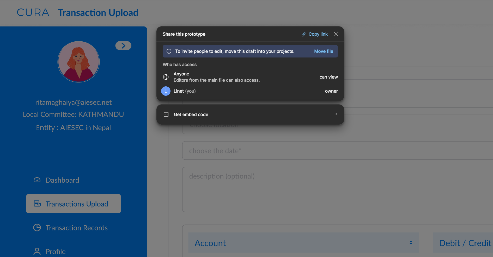
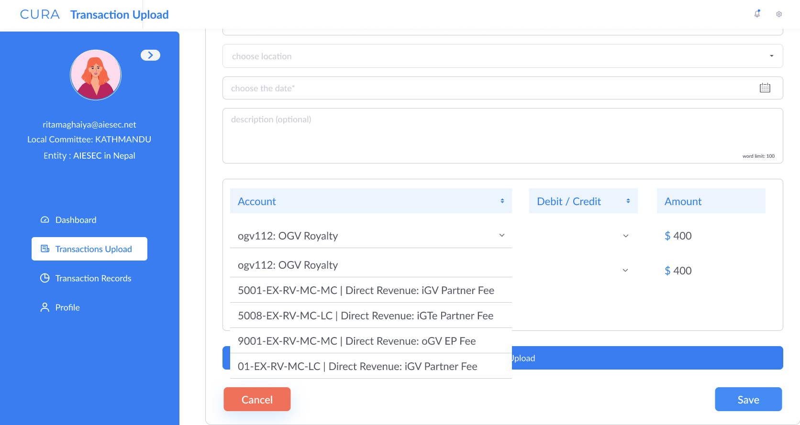
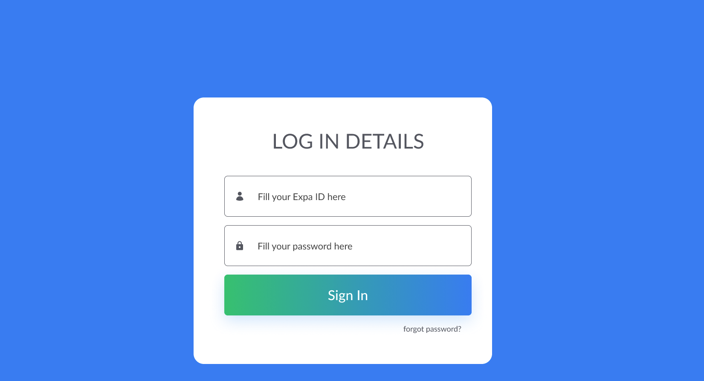
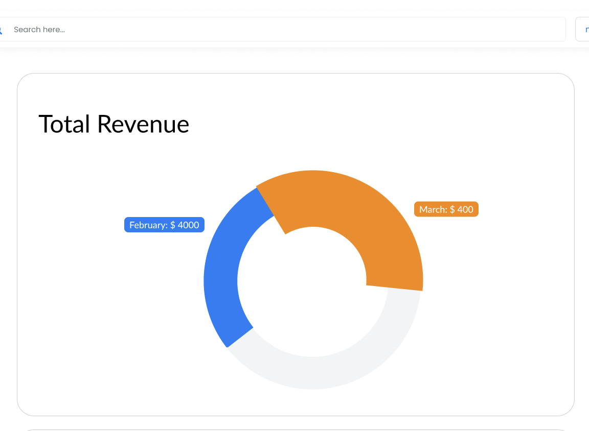
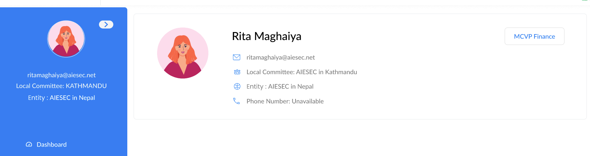
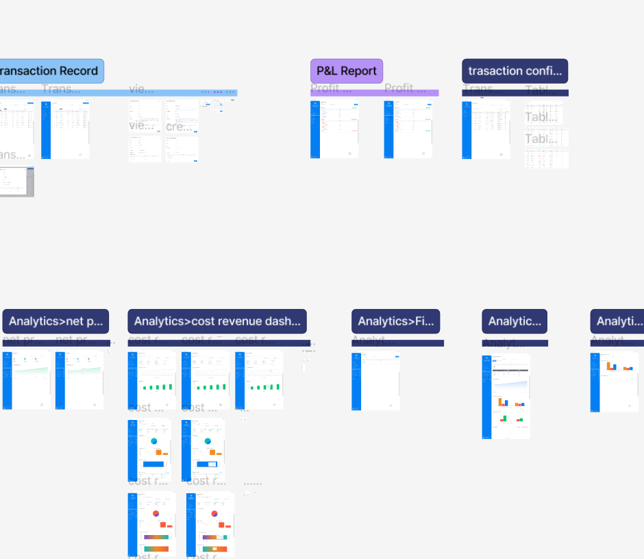

Team Collaboration
Co-created with designers

Cura is a data-heavy product workflow where usability, clarity, and speed were essential. I was part of a team during this project, and our progress came from multiple design meetings, structured feedback loops, and iterative interface improvements.
Co-created with designers
Review and alignment cycles
Designed and refined
Reduced cognitive load
The platform supports transaction uploads, records, and analytics, but early versions had friction in navigation, field entry, and data readability. Our objective was to make the product easier for users to learn and faster to use daily.
I contributed to interface design, workflow refinement, and usability decisions with the rest of the product team. During multiple meetings, we reviewed pain points, prioritized improvements, and agreed on consistent component behavior.
Mapped user pain points in transaction upload, account selection, and navigation discoverability.
Held recurring alignment sessions to evaluate options and prioritize the most impactful UI updates.
Produced multiple design versions and improved form flow, dashboard readability, and system feedback.
Standardized spacing, typography, and interaction states for a cleaner and more predictable experience.
Reduced complexity in multi-field entry tasks by clarifying labels, grouping fields, and action placement.
Used team feedback and walkthroughs to confirm that key tasks were easier to complete end-to-end.




